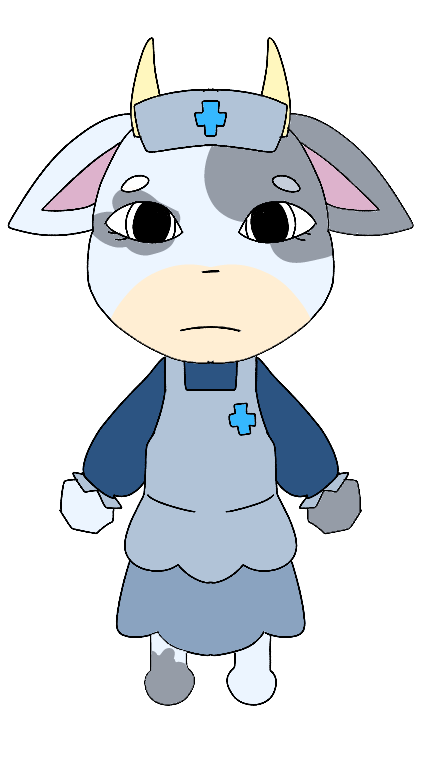

Character Database

| Espécie | Vaca |
| Gênero | Feminino |
| Pronomes | Ela/Dela (She/Her) |
| Cargo | Enfermeira-chefe |
| Status | Viva |
| Primeira Aparição | Turno 1 |
| Local | Loja do Hospital |
Miss Moo é uma vaca de pelagem branca com manchas cinzentas, pequenos chifres amarelos e olhos escuros. Ela usa um uniforme de enfermeira azul e cinza, luvas brancas e um chapéu de enfermeira com um símbolo médico azul. Sua expressão séria demonstra sua responsabilidade como enfermeira-chefe.
Miss Moo é a enfermeira-chefe do Animal Hospital e responsável pela loja interna. Todos os medicamentos, equipamentos e melhorias passam por ela antes de chegarem aos médicos e estagiários. Embora pareça séria e um pouco rígida, ela sempre procura manter o hospital funcionando da melhor maneira possível e ajuda qualquer funcionário que precise de suprimentos.